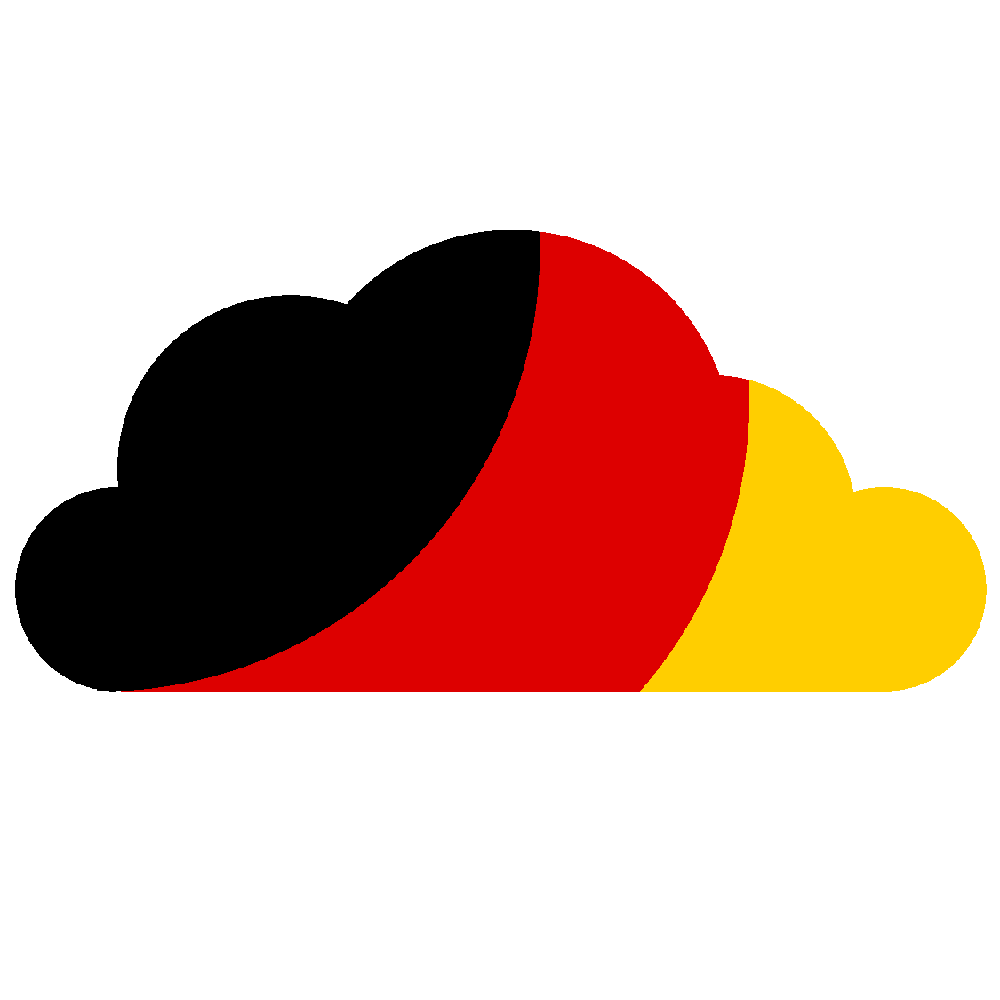
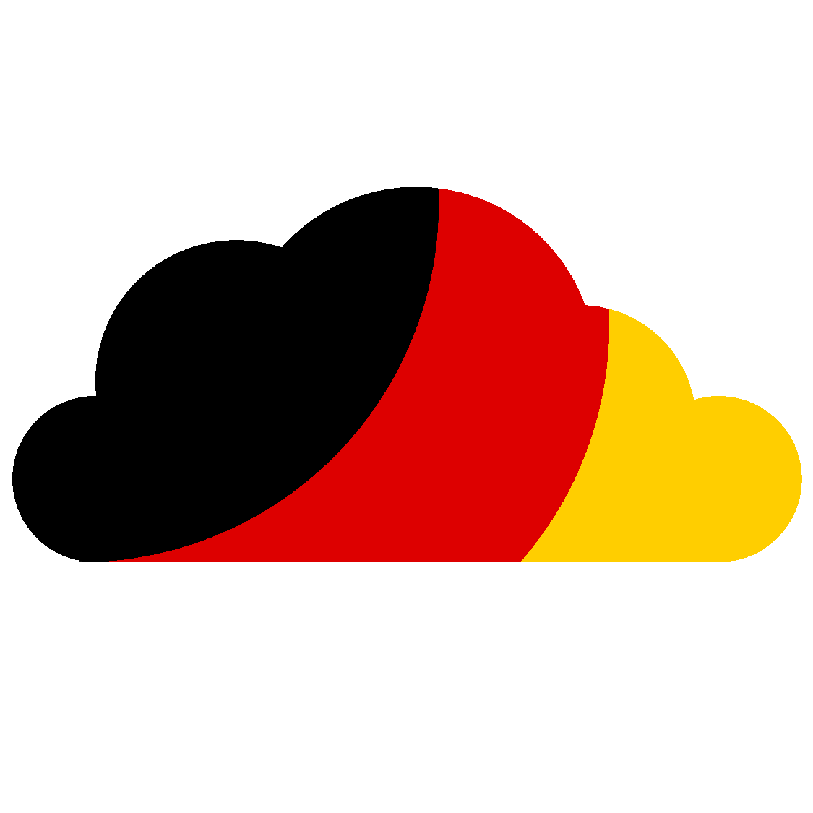

#
Using APIs
#
About
Whilst scraping a site is always a nice option, using it's API is way better.
And sometimes its the only way (eg: the site uses its API to load the content, so scraping doesn't work).
Anyways, this guide won't teach the same concepts over and over again,
so if you can't even make requests to an API then this will not tell you how to do that.
Refer to starting on how to make http/https requests. And yes, this guide expects you to have basic knowledge on both Python and Kotlin.
#
Using an API (and parsing json)
So, the API I will use is the SWAPI.
To parse that json data in python you would do:
import requests
url = "https://swapi.dev/api/planets/1/"
json = requests.get(url).json()
""" What the variable json looks like
{
"name": "Tatooine",
"rotation_period": "23",
"orbital_period": "304",
"diameter": "10465",
"climate": "arid",
"gravity": "1 standard",
"terrain": "desert",
"surface_water": "1",
"population": "200000",
"residents": [
"https://swapi.dev/api/people/1/"
],
"films": [
"https://swapi.dev/api/films/1/"
],
"created": "2014-12-09T13:50:49.641000Z",
"edited": "2014-12-20T20:58:18.411000Z",
"url": "https://swapi.dev/api/planets/1/"
}
"""Now, that is way too simple in python, sadly I am here to get your hopes down, and say that its not as simple in kotlin.
First of all, we are going to use a library named Jackson by FasterXML.
In build.gradle:
repositories {
mavenCentral()
jcenter()
maven { url 'https://jitpack.io' }
}
dependencies {
...
...
implementation "com.fasterxml.jackson.module:jackson-module-kotlin:2.11.3"
compile group: 'khttp', name: 'khttp', version: '1.0.0'
}After we have installed the dependencies needed, we have to define a schema for the json.
Essentially, we are going to write the structure of the json in order for jackson to parse our json.
This is an advantage for us, since it also means that we get the nice IDE autocomplete/suggestions and typehints!
Getting the json data:
val jsonString = khttp.get("https://swapi.dev/api/planets/1/").textFirst step is to build a mapper that reads the json string, in order to do that we need to import some things first.
import com.fasterxml.jackson.databind.DeserializationFeature
import com.fasterxml.jackson.module.kotlin.KotlinModule
import com.fasterxml.jackson.databind.json.JsonMapper
import com.fasterxml.jackson.module.kotlin.readValueAfter that we initialize the mapper:
val mapper: JsonMapper = JsonMapper.builder().addModule(KotlinModule())
.configure(DeserializationFeature.FAIL_ON_UNKNOWN_PROPERTIES, false).build()The next step is to...write down the structure of our json!
This is the boring part for some, but it can be automated by using websites like json2kt or quicktype to generate the entire code for you.
First step to declaring the structure for a json is to import the JsonProperty annotation.
import com.fasterxml.jackson.annotation.JsonPropertySecond step is to write down a data class that represents said json.
// example json = {"cat": "meow", "dog": ["w", "o", "o", "f"]}
data class Example (
@JsonProperty("cat") val cat: String,
@JsonProperty("dog") val dog: List<String>
)This is as simple as it gets.
Enough of the examples, this is the representation of https://swapi.dev/api/planets/1/ in kotlin:
data class Planet (
@JsonProperty("name") val name: String,
@JsonProperty("rotation_period") val rotationPeriod: String,
@JsonProperty("orbital_period") val orbitalPeriod: String,
@JsonProperty("diameter") val diameter: String,
@JsonProperty("climate") val climate: String,
@JsonProperty("gravity") val gravity: String,
@JsonProperty("terrain") val terrain: String,
@JsonProperty("surface_water") val surfaceWater: String,
@JsonProperty("population") val population: String,
@JsonProperty("residents") val residents: List<String>,
@JsonProperty("films") val films: List<String>,
@JsonProperty("created") val created: String,
@JsonProperty("edited") val edited: String,
@JsonProperty("url") val url: String
)For json that don't necessarily contain a key, or its type can be either the expected type or null, you need to write that type as nullable in the representation of that json.
Example of the above situation:
[
{
"cat":"meow"
},
{
"dog":"woof",
"cat":"meow"
},
{
"fish":"meow",
"cat":"f"
}
]It's representation would be:
data class Example (
@JsonProperty("cat") val cat: String,
@JsonProperty("dog") val dog: String?,
@JsonProperty("fish") val fish: String?
)As you can see, dog and fish are nullable because they are properties that are missing in an item.
Whilst cat is not nullable because it is available in all of the items.
Basic nullable detection is implemented in json2kt so its recommended to use that.
But it is very likely that it might fail to detect some nullable types, so it's up to us to validate the generated code.
Second step to parsing json is...to just call our mapper instance.
val json = mapper.readValue<Planet>(jsonString)And voila!
We have successfully parsed our json within kotlin.
One thing to note is that you don't need to add all of the json key/value pairs to the structure, you can just have what you need.
#
Note
Even though we set DeserializationFeature.FAIL_ON_UNKNOWN_PROPERTIES as false it will still error on missing properties.
If a json may or may not include some info, make those properties as nullable in the structure you build.